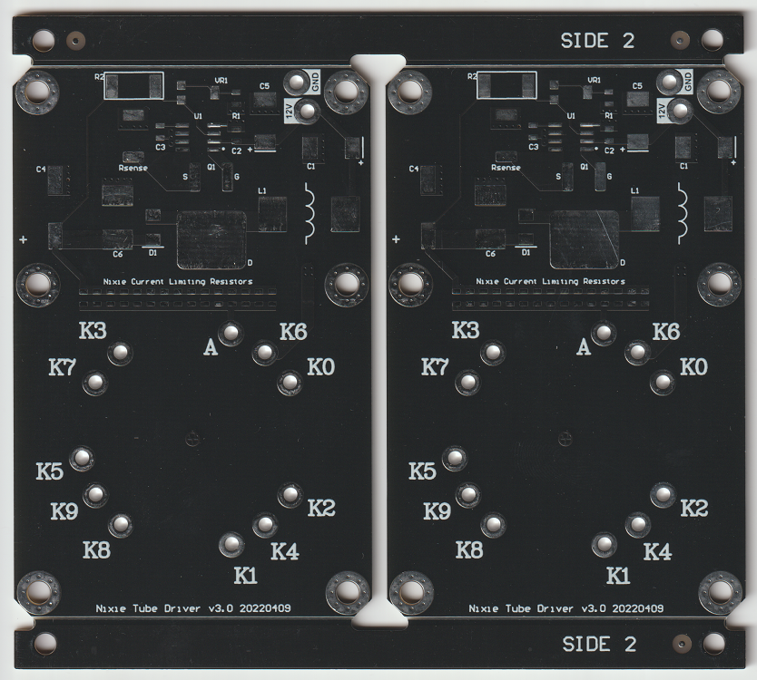
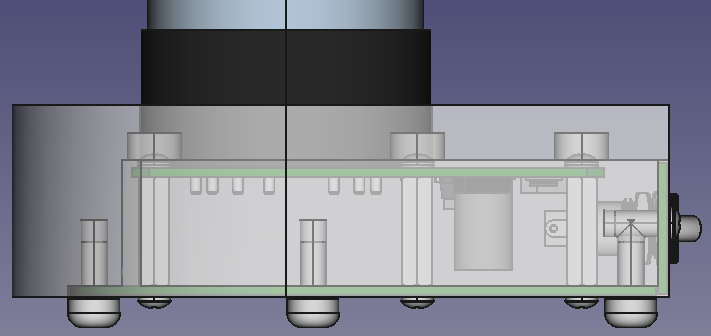
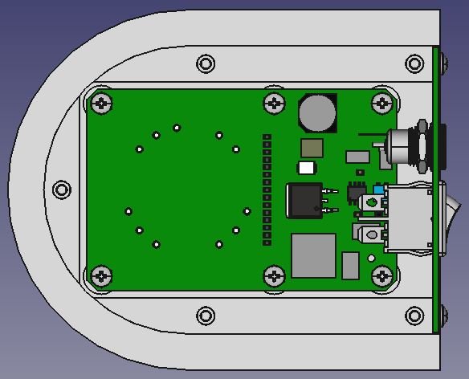

Nixie Heart
A gift for my wife. The custom nixie tube was made by Dalibor Farny, who was kind enough to humor me. The schematic was based on a boost regulator by Nick de Smith. The wooden enclosure was made by a CNC shop from plans I drew. The whole thing was 3D modeled to make sure it would fit together. Project Log.

Driver Schematic
Nixie tubes are usually driven with 170V. I hadn't implemented a voltage convertor with such a high output before, so the first thing I did was look around the web for nixie drivers. Eventually I found one by Nick de Smith that was pretty simple. I basically just implemented that with parts I could get. Apparently if you just use a regular boost convertor driver without an integrated inductor or switches, calculate the feedback resistors correctly, then make sure all the components are rated for high voltage everything works out.
I didn't have a good idea of the I-V curve of the nixie tube, so I didn't know what value its series resistor should be for a specific current. I also wasn't sure how much current would be needed for a good level of glow, except that it would be around 10 or 20 mA. I didn't want to order a bunch of values of high voltage resistors to test with, so I just added a bunch of resistor footprints in parallel and chose two resistor values that, if the tube was shorted, would give approximately 1mA and 5mA. I could then just keep adding resistors until the tube was bright enough.
Driver Layout
Since this was a one-off project, I didn't try to optimize efficiency, EMI, or cost. Nixie tubes are pretty forgiving loads, so the output didn't even have to be particularly noiseless. I did try to make the layout and footprints easy to solder since I would be doing it by hand.
The pictures of the bare PCBs were taken with a scanner, which I hadn't tried before. I think it worked great, except that the pads don't show up very well. Maybe it would have been better if I'd used ENIG plating instead of HASL, or a different color solder mask.
Nixie Tube Characteristics
I ended up using six 100kΩ and two 27kΩ resistors, giving an equivalent series resistance of 7.46kΩ. This resulted in a tube current of 5.8mA which implies an effective tube resistance of 21.9kΩ (at that current).
Now that I have a bunch of data points from testing a bunch of resistor combinations, I can plot the tube's V-I curve.
It looks like it's close to a constant voltage device, which is good to know.
There's a neat graphical trick that can be used to calculate the series resistance for a desired current.
The blue dots and red line are data from the tube and its best fit line, respectively. The green line is the V-I curve for the 7.5kΩ series resistor, but subtracted from 170V.
Calculating a series resistance for a specific current works like this: You take two measurements of the tube current and voltage with arbitrary series resistance values and use them to plot the red line. Then, with a green line that's pinned at the total voltage on the y-axis, you sweep it along the red line until they intersect at your desired current. The absolute value of the slope of the green line will be the series resistance you should use.
This works because the current through the tube and the resistor are the same, and also the voltage at the top of the tube and the total voltage minus the voltage across the resistor are the same. That means that their two curves should intersect at the only physically realizable location on the graph.
Even though the tube turned out to be linear, this kind of graphical calculation works with non-linear circuit elements, if you need to put a resistance in series with them to get a specific current.
For future reference, here's the tube's resistance vs current:
Electrical BOM
| Designator | Description | Manufacturer | Part Number | Quantity | Price/unit (CAD) |
|---|---|---|---|---|---|
| C1 | CAP TANT 100UF 20% 20V 2917 | AVX Corp | TPSD107M020R0085 | 1 | $2.42 |
| C2, C3 | CAP CER 0.1UF 50V Y5V 0805 | Yageo | CC0805ZRY5V9BB104 | 2 | $0.094 |
| C4 | CAP ALUM 10UF 20% 250V SMD | Panasonic | EEV-EB2E100Q | 1 | $3.18 |
| C5 | CAP TANT 10UF 10% 35V 2917 | AVX Corp | TPSD106K035R0125 | 1 | $2.77 |
| C6 | CAP FILM 0.1UF 5% 250VDC 2420 | Panasonic Electronic Components | ECW-U2104V16 | 1 | $2.60 |
| D1 | DIODE GEN PURP 300V 2A DO214AA | Vishay Semi | ES2F-E3/52T | 1 | $0.56 |
| L1 | FIXED IND 100UH 1.3A 160 MOHM | Sumida America Components Inc. | CDRH125NP-101MC | 1 | $2.32 |
| M1 - M10 | CONN PIN RCPT .035-.041 KNURL | Harwin Inc. | H3161-01 | 10 | $0.40 |
| Q1 | MOSFET N-CH 600V 30A D2PAK | Vishay Siliconix | SIHB100N60E-GE3 | 1 | $6.72 |
| R1 | RES SMD 11.8K OHM 1% 1/8W 0805 | Panasonic Electronic Components | ERJ-6ENF1182V | 1 | $0.14 |
| R2 | RES SMD 1.5M OHM 5% 1W 2512 | Panasonic | ERJ-1TYJ155U | 1 | $0.74 |
| R3 - R8 | RES SMD 100K OHM 1% 1/8W 0805 | Rohm Semiconductor | KTR10EZPF1003 | 6 | $0.25 |
| R16, R17 | RES SMD 27K OHM 1% 1/8W 0805 | Rohm Semiconductor | KTR10EZPF2702 | 6 | $0.25 |
| Rsense | RES SMD 0.1 OHM 1% 2W 2512 | Stackpole Electronics Inc | CSRN2512FTR100 | 1 | $0.61 |
| T1 | Nixie Tube - Heart | Dalibor Farny | Custom | 1 | $190 |
| U1 | IC REG CTRLR BST/BUCK-BST 8SOIC | Maxim Integrated | MAX1771ESA+ | 1 | $9.22 |
| VR1 | TRIMMER 5K OHM 0.25W GW SIDE ADJ | Bourns Inc. | 3214G-1-502E | 1 | $4.04 |
| - | PCB | JLC PCB | - | 1 | $3.68 |
Total PCBA cost = $41.51
Mechanical Design
 
Back Plate
 Back Plate Mechanical Drawing
Back Plate Mechanical Drawing

Base Plate
Base Plate Mechanical Drawing
Enclosure
Enclosure Mechanical Drawing
This was actually the third version of the project. The main issue with the first two was the producibility of the enclosure. The first version of the project called for a round wooden enclosure, turned on a wood lathe. I fully designed the thing, but when I tried to turn the enclosure I found that it was pretty hard to get the dimensional accuracy that I wanted. It was also overly complicated with two PCBs and a high voltage cable that went between them.
The second version was much like the first, but square. This would have been easier to build, but I had lost access to a woodshop with precise tools. For the third version I gave up on making the enclosure myself and designed something that I could contract out to any shop with a CNC mill. Almost all of the features can be formed with a vertical cylindrical "wood disappearing" wand.
I commissioned a CNC shop and since their quoted price was surprisingly low I asked for four of them. I'm glad I did because three of them were unusable. In order to make the features on the back side, instead of mounting the piece vertically and cutting them out on the CNC, they cut them out by hand with a chisel. As a result, the back plate would not fit in the recess of three of the four enclosures. They also overcut at two points leaving two gaps around the base plate.
When I was a carpenter, work that sloppy would have been professionally embarrassing. In hindsight I could have given them samples of the back and base plates so it would be obvious that their work didn't match the drawing I gave them.
Instead of screwing directly into the wood I epoxied round F-F threaded standoffs into holes. In order to keep the epoxy out of the standoffs I put tape on either end and trimmed it flush. I covered the enclosure in tape, swabbed some epoxy in each hole, then pushed the inserts in. After the epoxy dried I cleaned up the excess and it turned out really clean.
Assembly
Mechanical BOM
| Item | Description | Manufacturer | Part Number | Quantity | Price/unit (CAD) |
|---|---|---|---|---|---|
| Driver PCBA | - | Me | - | 1 | $41.51 |
| Nixie Tube | Custom Heart Tube | Dalibor Farny | Custom | 1 | $190 |
| Standoffs | HEX STANDOFF M3 ALUMINUM 20MM | Keystone Electronics | 24447 | 6 | $0.83 |
| Screws | MACH SCREW PAN HEAD PHILLIPS M3 | B&F Fastener Supply | MPMS 003 0005 PH | 14 | $0.10 |
| Base Plate | - | JLC PCB | - | 1 | $3.81 |
| Back Plate | - | JLC PCB | - | 1 | $1.93 |
| Switch | SWITCH ROCKER SPST 10A 125V | E-Switch | R6ABLKBLKFF | 1 | $2.78 |
| Power Jack | CONN PWR JACK 2.1X5.5MM SOLDER | Tensility International Corp | 54-00063 | 1 | $3.96 |
| Enclosure | Custom Wooden Enclosure | The Original Workshop | Custom | 1 | $60 |
| Threaded Inserts | ROUND STANDOFF M3X0.5 BRASS 8MM | Harwin Inc. | R30-5000802 | 7 | $0.83 |
| Epoxy for Threaded Inserts | Generic Two Part Epoxy For Wood and Metal | Canadian Tire | - | 1/4 Syringe | $2.50 |
| Feet | FOOT CYLINDRICAL 0.374" DIA BLK | Essentra Components | TB-3 | 5 | $2.80 |
| Wire | HOOK-UP 22AWG STRAND | Adafruit Industries LLC | 3111 | 4 inches | $0.06 |
| Power Supply | AC/DC WALL MOUNT ADAPTER 12V 6W | CUI Inc. | SWI5-12-N-P5R | 1 | $11.30 |
Total device cost without enclosure and nixie tube: $94.04
Total device cost: $344.04
A full sized version of the above picture can be found here. Feel free to use it under a CC BY-NC-SA 4.0 license.
Back to Projects.